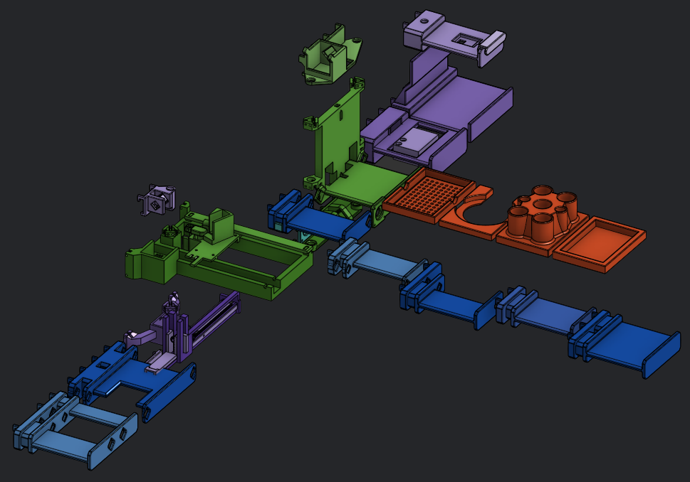
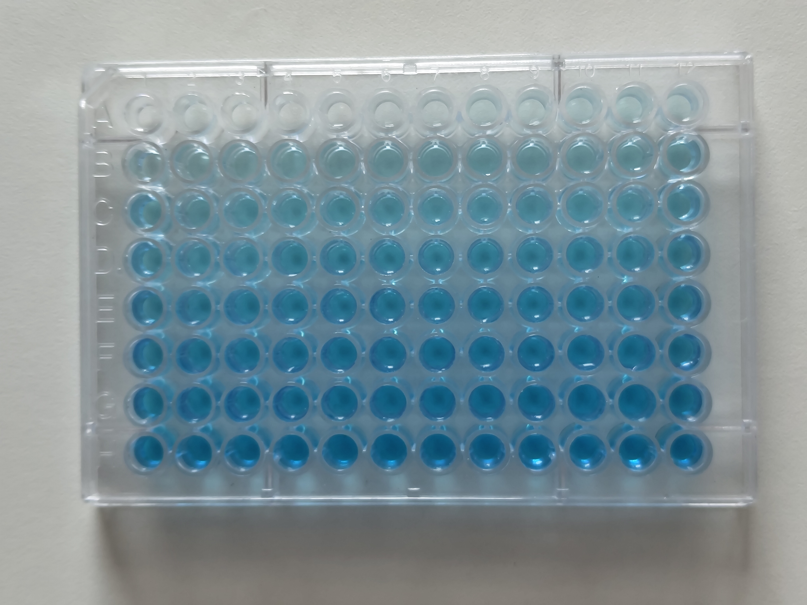
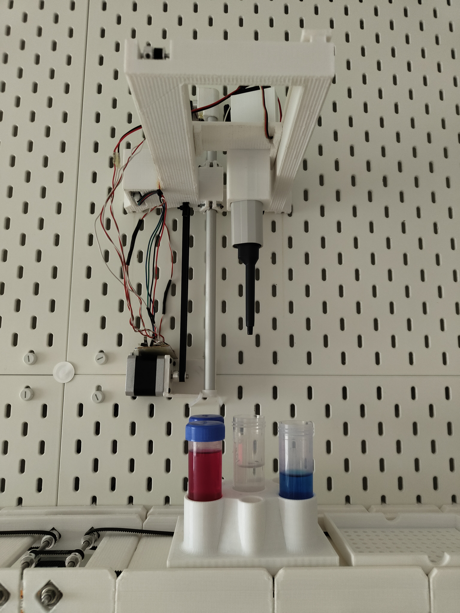
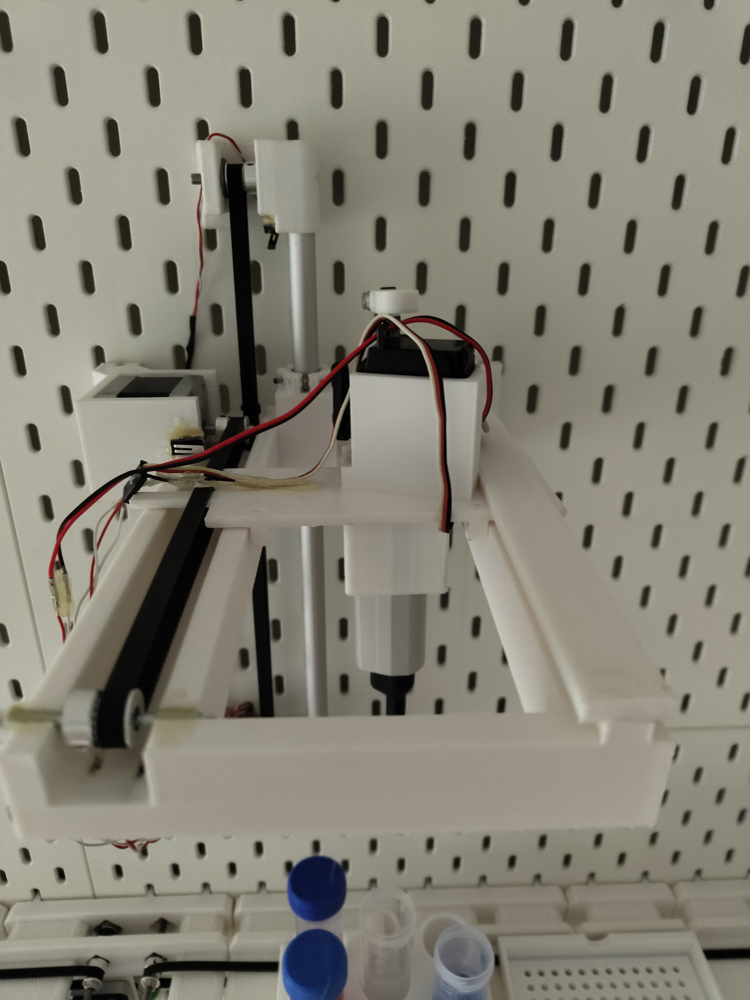

Biomation

This is an approach to combine both synthetic biology with robots, spanding all the way to software in favor of having the best of both worlds.
Scope
Biology has two main ways in which research is done: either trying to understand a black box and finding patterns in existing systems, or trying to build and configure your own systems with properties you desire. Synthetic biology is the latter approach and is chosen because it is engineering alike, instead of being a guessing game.
If you add abstraction layers into the process of experimentation in this area of research, you are left with something powerful for automation. In essence, all experiments combine liquid inside containers, apply some physical property, and lastly analyze it in-place. There is nearly nothing else that makes an exception simply because biology relies on liquid to make chemical reactions possible. Just imagine how little of our known biology would be possible if you have absolutely no liquid (e.g. water). So if that is the case, being a master of liquid handling makes you a master of experimentation. The interpretation is another story and not covered in the scope.
The idea is to have automated lab results, supporting the improvement of: reproducability, interpretation accuracy, error mitigation, and guided simulations. Robots, if calibrated correctly, will always perform within their ranges of error. This makes any experiment reproducible if all resources used can be carefully traced back to its origin. This will also make interpretation much easier if machines compute this error range for you. There is no rough number anymore in the end that requires interpretation using your gut, e.g. “The light was absorbed 15% more”, it will be logically deducted, e.g. “The light absorption error ranges overlap, leading to no quantifiable increase in absorption”. In the lab I’ve often heard something similar to the phrase “This spike could be an execution error like pipetting, dirt, etc.”, which never got analyzed any further. Nobody has the patience to meticulously note down any minor imprecisions made during their full lab day. People would rather invest an additional day and all resources to repeat the experiment just to get a clean, i.e. successful, experiment. Yes, repetition is sometimes the call, but if you can pinpoint error ranges during any step, your spikes become explainable and not just noise to be ignored. Having such results also helps with running simulations. They can be run before you even run your wet lab protocol, pinpointing any rough mistakes that you might do.
Specifically, I plan on creating:
- Hardware:
- Warehouse-like storage and transport systems using modular cargo
- Pipetting machines for accurate liquid handling
- Camera systems to allow for supervision and documentation
- Scale for weighing
- Heat and cooling plates/chambers
- Integration to a centrifuge
- Integration to a pcr machine
- Auto sterilization with a section dedicated to being as sterile as possible
- Container mixing
- Integrated Spectrometry
- Sensing capability at any position to ensure a smooth experience
- Software:
- Parsable domain specific language for synthetic biology protocols
- Interface to create, run, modify, interpret, traceback, log, import, or export protocols
- Export capabilities to create human readable text with the results with sources instantly right where they are used
- Automatic Execution of protocols in parallel with options for manual intervention
Layers
- Hardware: In C-code I must make all functions available with parallalization. Every command should be executable with even overwritting shutdown sequences. I have devices like Arduino Unos who run grbl mainly. Also I want to add a party mode where sensors go wild here
- Middleware: Is my controller, handling the controllers. It keeps track of queues and responses. Relatively straight forward and I used an Arduino Mega 2048 because of its 4 Serial communication line. I might expand to having another Mega in series.
- Networking: My middleware has no wifi component, so I need something in between that can catch commands like my esp32 c3 who at this time runs mqtt subscribes and publishes. The mqtt is hosted on a raspberry pi because of its far greater ram capabilities to make hosting reliably possible.
- Framework: Inside my software, the first abstraction must be applied in which I use first semantics, to when some execution is valid and does not cause any issues. Something like move the pipette up, before you move it sideways. It keeps track of devices states itself and readjusts that on demand. While the safe mode is the focus, I also want high speed modes which ignore such safety rules in favor of reducing the step count. Here I need to see at which point my brain cannot keep up with what will logically happen to the state by doing that.
- Low-level Software: Here I want, similar to a compiler, parallization methods and speed improvements. If multiple protocols are run, what is a critical step, when can you do what, does one have extra priority? If you plan on executing this sequence of functions, you can use this enhanced standalone function which is faster. Should the speed be dropped in favor to be quieter. Predict how long each step could take to have a full perspective.
- High-level Software: You don’t want to code down the most time efficient execution, but instead just what you want to see. It should translate the protocols, combine it with the devices that are known, and allow for it to compile down into the low-level language. Add multiple protocols, tell them to make one go faster, tell some protocol to move the time window at which a manual step is performed. On missing manual steps, it should have fail safes like e.g. put enzymes on ice again.
- User Interaction: The user is at the top of it all and simply writes the protocols. The protocols can be copied, viewed life, and even be shared. They can observe what has been done, when, with what. Results can be viewed as life demos to show tracability, or exported as direct markdown or .tex formats with sources.
Challenges
The highest priority is going to be a precision and predictable behaviour of hardware devices. Everywhere I need sensors sprinkled in, all connected to the main controller. This is a pain because they need wiring and that means plenty of cutting cable and soldering it in-place.
If my hardware behaves like I want it to behave, I have got 80% of the challenge down. Using software, I ensure nothing gets into such error state and stop it all, if it does. I create singular well tested functions for controlling the components. By adding a few states here and there, I end up with a highly modular framework that is easy to use. Then, with some headache, I add in parallelization to run multiple things whenever they are needed and I’m done.
The whole project does sound like something massive, but just by having the first demonstration video down of what it could look like, I already got a good insight into the usefulness. Best thing is its dynamic and modular build, so I can add anything I can think off, camera systems, heat chambers and more.
Spotlight
Elevator
Pipetter

This is just a demonstration video obviously, things like tip changing, more optimal pathing, and more accurate pipette sucking are easily doable and on the todo list. I selected a low speed in execution to ensure a smooth experience all the way through, hence a timelapsed video is shown. The speed can easily be adjusted to be much faster, but at some point the speed negatively impacts the precision, and because I haven’t tested enough, I have yet to discover that point.

Overall this is a fantastic proof-of-concept and a massive motivational boost. It showed me the future of this project and how robotics would really revolutionize any lab work I will ever attend. Any tedious work is slowly being offloaded to an accurate machine, giving me more time I use for important stuff. As a plus, all parts were 3d printed, and I used cheap equipment, which makes scaling as easy as it gets. It does not translate to time anymore but to money, giving devices a fixed price.


Costs
Most parts are bought from Aliexpress or Ebay:
| Name | Comment | Price |
|---|---|---|
| Pipette | 17.79€ | |
| Nema17 step motors | ~5€ per pc | ~10€ |
| Servo | I used from a broken RC car | ~5€ |
| Gt2 Belt | 6.39€ for 10 meters | 0.69€ |
| Linear actuator | 12.19€ | |
| Gt2 rollers | 3.19€ for 5pcs | 1.28€ |
| Plastic PLA | 15.0€ for 1kg | ~3€ |
| Limit switches | 2.49€ for 20pcs | 0.50€ |
| Cables | are neglegable | ~1€ |
| Controller | with cnc shield | 6.64€ |
| Some relays, diodes, resistors etc | ~1€ |
=> A total of ~59.09€
If I compare these costs to any pipetting robot, it clearly is the winner. Even if the price seems still too high, it saves you time, making it valuable regardless of the price.
Progress report
As of October 2026 here is where each layer is in:
- Hardware:
- Pipetting device 80%: I’ve created the demonstration pipetting device which is about 80% done regarding precision and sensing. I’m missing if the pipette is experiencing pressure at its tip, there is about 5mm wiggle room from left to right, about 3mm wiggle room from front to back, and some issues on the mounter that bends if motors work for hours and heat up.
- Modular cargo 80%: I have a basic few ones with material that behaves precisely without vibrations effecting it. Now it is just about creating new cargos, and printing them. Super easy, super simple
- Elevator 90%: The elevator is precise even with sensing as an extra. Unfortunately I still need to wrap the cable somewhere as it currently might catch onto something. For slightly more sensing I would love to know if cargo is on the elevator and not just halfway and whether the cargo does not stick out of the sides. My guess is finding some proximity sensors and integrating them.
- Conveyors 100%: I can build normal conveyor belts of nearly every length with motor mounts at any position. They are stable, durable and modular for extra sensing. For any conveyor I can tell you what parts I need exactly and how long it would take to print.
- Scale 40%: The core is down and functional but untested and uncalibrated. I’m not sure how good it will work.
- Photostudio 60%: The photostudio has functional camera with unfortunately no reliable servo doors. The lighting is present, and with my new polarizer filter, it should remove any glare I have from the cargo. Some testing was done, but lighting was uneven, doors broke, cameras did not turn on reliably, the angle of them was good tho, the resolution was limited.
- Spectrometer 5%: The idea is clear, a concept was made, some parts ordered and tried but did not work.
- Storage 0%: With no fully functional pieces, storage is not required.
- Middleware 75%:
- The system works relatively reliable. No production testing was done tho. It might fail in some edge case and it does not turn on reliably. I also wanted to add another mega for more functionality which should be not that big of a deal
- Networking 100%:
- Mqtt works well, no complains yet and probably none in the future.
- Framework 15%:
- I’ve done some python scripting but no real coding in which I start to set things in stone, because I don’t have proper hardware devices that remain unchanged yet. The elevator is one of them combined with conveyors, but hybrid approaches are also kind of weird to use.
- Low-level Software 0%:
- Nothing
- High-level Software 30%:
- The language definition is created with a syntax I find readable and easy to understand. I’ve had a working template with a whole parser, but I added an execution syntax which integrates into the template, thereby extending it to be a protocol that can be executed. Some parts of the syntax can still change and probably will. But I almost have the parser back running, so I can continue. So the core is almost done. After the core, I can translate them into something similar to assembly, only if I have something in the framework. I might use stubs or dummies to go from both direction.
- User Interaction 5%:
- I’d say this is the last step, but as a prototype I’ve sketched something down that would represent how a protocol could be executed and displayed. I’ve got many ideas about using the 3d models of each device that is 3d printed as the object I represent in 3d space in real time as a display. Idea is great, but just a goodie, not required.